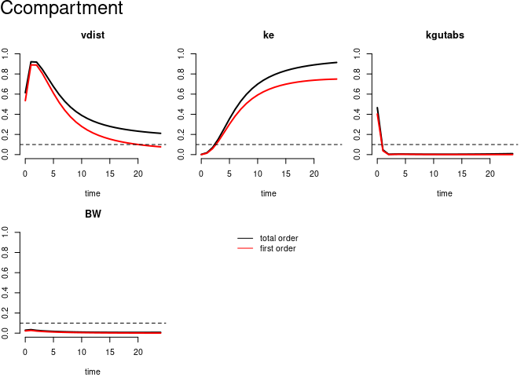

pksensi implements the global sensitivity analysis workflow to investigate the parameter uncertainty and sensitivity in physiologically based kinetic (PK) models, especially the physiologically based pharmacokinetic/toxicokinetic model with multivariate outputs. The package also provides some functions to check the convergence and sensitivity of model parameters.
Through pksensi, you can:
Run sensitivity analysis for PK models in R with script that were written in C or GNU MCSim.
Decision support: The output results and visualization tools can be used to easily determine which parameters have “non-influential” effects on the model output and can be fixed in model calibration.
Installation
You can install the released version of pksensi from CRAN with:
install.packages("pksensi")And the development version from GitHub with:
# install.packages("devtools")
devtools::install_github("nanhung/pksensi")This package includes a function that can help you install GNU MCsim more easily through the function
mcsim_install().All updated details can be found in NEWS.md.
NOTE: Windows users need to install Rtools40 to compile the model code.
Workflow

Note: The parameter correlation (e.g., Vmax and KM in metabolism) might be an issue in the global sensitivity analysis. If you have experiment data, suggest using small datasets as a sample in Markov Chain Monte Carlo Simulation. Then, check correlation before conducting the sensitivity analysis. The issue will try to address in the future version.
Example
This is a basic example of applying pksensi in one-compartment pbtk model:
Step 1. Construct 1-cpt pbtk model
pbtk1cpt <- function(t, state, parameters) {
with(as.list(c(state, parameters)), {
dAgutlument = - kgutabs * Agutlument
dAcompartment = kgutabs * Agutlument - ke * Acompartment
dAmetabolized = ke * Acompartment
Ccompartment = Acompartment / vdist * BW;
list(c(dAgutlument, dAcompartment, dAmetabolized),
"Ccompartment" = Ccompartment)
})
}Step 3. Generate parameter matrix
3.1. (Optional) Extract parameter value from httk package
library(httk)
pars1comp <- (parameterize_1comp(chem.name = "acetaminophen"))
#> Human volume of distribution returned in units of L/kg BW.Step 4. Conduct simulation (will take few minutes with more replications)
out <- solve_fun(x, time = t, func = pbtk1cpt, initState = initState, outnames = outputs)
#> Starting time: 2021-06-17 11:47:17
#> Ending time: 2021-06-17 11:47:23
Step 6. Check and visualize the result of sensitivity analysis
plot(out) # Visualize result
check(out) # Print result to console
#>
#> Sensitivity check ( Index > 0.05 )
#> ----------------------------------
#> First order:
#> vdist ke kgutabs
#>
#> Interaction:
#> vdist ke kgutabs
#>
#> Total order:
#> vdist ke kgutabs
#>
#> Unselected factors in total order:
#> BW
#>
#>
#> Convergence check ( Index > 0.05 )
#> ----------------------------------
#> First order:
#>
#>
#> Interaction:
#>
#>
#> Total order:
#> Citation
To cite pksensi in publications use:
Hsieh, N-H., Reisfeld B., and Chiu W.A., (2018). pksensi: An R
package to apply global sensitivity analysis in physiologically based
kinetic modeling SoftwareX, 12, 100609.
https://doi.org/10.1016/j.softx.2020.100609
A BibTeX entry for LaTeX users is
@Article{,
title = {{pksensi}: An R package to apply global sensitivity analysis in physiologically based kinetic modeling},
author = {Nan-Hung Hsieh and Brad Reisfeld and Weihsueh A. Chiu},
journal = {SoftwareX},
year = {2020},
volume = {12},
pages = {100609},
doi = {10.1016/j.softx.2020.100609},
}Reference
Hsieh NH, Reisfeld B, Bois FY, Chiu WA. Applying a global sensitivity analysis workflow to improve the computational efficiencies in physiologically-based pharmacokinetic modeling. Frontiers in Pharmacology 2018 Jun; 9:588.
Hsieh NH, Reisfeld B, Chiu WA. pksensi: an R package to apply sensitivity analysis in pharmacokinetic modeling. 58th SOT Annual Meeting, Baltimore, USA, March 10–14, 2019.
Deepika D, et al. Risk Assessment of Perfluorooctane Sulfonate (PFOS) using Dynamic Age Dependent Physiologically based Pharmacokinetic Model (PBPK) across human lifetime. Environmental Research (2021): 111287.